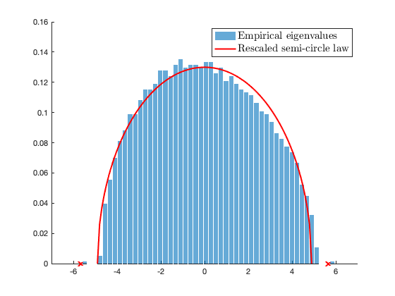
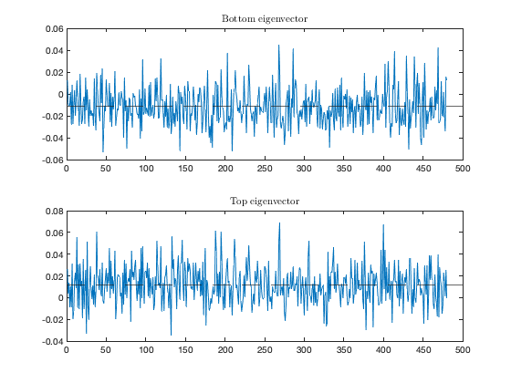

Section 4.3 The  random kernel model
random kernel model
This page contains simulations in Section 4.3.
Contents
Eigenspectrum of 
close all; clear; clc coeff = 2; p = 400*coeff; n = 1200*coeff; c = p/n; rng(928); W = randn(p,n); % population covariance = identity Phi = sqrt(p)*( (W'*W/p).^2 - 1/p); Phi = Phi - diag(diag(Phi)); eigs_Phi = eig(Phi); omega = sqrt(2); Omega = sqrt(2); spike_location = Omega/c+omega^2/Omega; edges = linspace(-2*omega/sqrt(c), 2*omega/sqrt(c), 100); mu = sqrt( 4*omega^2/c - edges.^2 )*c/2/pi/omega^2; figure hold on histogram(eigs_Phi, 50, 'Normalization', 'pdf'); plot(edges,mu, 'r', 'Linewidth',2); plot([-spike_location, spike_location],[0,0],'x', 'LineWidth', 2); legend('Empirical eigenvalues', 'Rescaled semi-circle law', 'FontSize', 15, 'Interpreter', 'latex'); axis([-7 7 0 0.16]);
Limiting spectra of kernel
close all; clear; clc coeff = 1; p = 512*coeff; n = 1024*coeff; c = p/n; cs = [1/2, 1/2]; n_cs = n*cs; k = length(cs); % number of classes alpha = 8; beta = 1; f = @(t) beta*(t+alpha/2/beta/sqrt(p)).^2; f_d = @(t) 2*beta*(t+alpha/2/beta/sqrt(p)); testcase_option = 'iid'; switch testcase_option case 'iid' means = @(i) zeros(p,1); covs = @(i) eye(p); case 'means' means = @(i) [zeros(i-1,1);1;zeros(p-i,1)]*5; covs = @(i) eye(p); case 'var' means = @(i) zeros(p,1); covs = @(i) eye(p)*(1+(i-1)/sqrt(p)*10); case 'orth' means = @(i) zeros(p,1); covs = @(i) toeplitz((6*(i-1)/10).^(0:(p-1))); case 'mixed' means = @(i) (-1)^(i)*[1;zeros(p-1,1)]*2; covs = @(i) eye(p)*(1+(i-1)/sqrt(p)*5); end covs_mean = cs(1)*covs(1) + cs(2)*covs(2); eigs_covs_mean = eig(covs_mean); tau = trace(covs_mean)/p; rng(928); W=zeros(p,n); for i=1:k W(:,sum(cs(1:(i-1)))*n+1:sum(cs(1:i))*n)=sqrtm(covs(i))*randn(p,cs(i)*n); end X=zeros(p,n); for i=1:k X(:,sum(cs(1:(i-1)))*n+1:sum(cs(1:i))*n)=W(:,sum(cs(1:(i-1)))*n+1:sum(cs(1:i))*n)+means(i)*ones(1,cs(i)*n); end P = eye(n) - ones(n,n)/n; X_center = X*P; K = f(X_center'*X_center/p); K = K - diag(diag(K)); PKP = P*K*P; rescale_PKP = sqrt(p)*(PKP + (f(0)+tau*f_d(0) )*P); eigs_rescale_PKP = eig(rescale_PKP); omega = sqrt(2)*trace(covs_mean*covs_mean)/p; if min(eigs_rescale_PKP)<0 edges = linspace(min(eigs_rescale_PKP)*1.1, max(eigs_rescale_PKP)*1.1, 200); else edges = linspace(min(eigs_rescale_PKP)*0.9, max(eigs_rescale_PKP)*1.1, 200); end clear i % make sure i stands for the imaginary unit y = 1e-5; zs = edges+y*1i; mu = zeros(length(zs),1); m=0; for j=1:length(zs) z = zs(j); m_tmp=1; while abs(m-m_tmp)>1e-6 m_tmp=m; m = 1/( -z + alpha*mean(eigs_covs_mean./(1+alpha*m*eigs_covs_mean/c)) - beta^2*omega^2*m/c); end mu(j)=imag(m)/pi; end figure histogram(eigs_rescale_PKP, 40, 'Normalization', 'pdf'); hold on; plot(edges,mu,'r', 'Linewidth',2); legend('Empirical spectrum of $\check K$', 'Limiting law', 'FontSize', 15, 'Interpreter', 'latex');